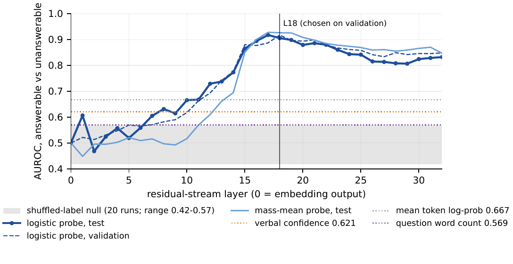
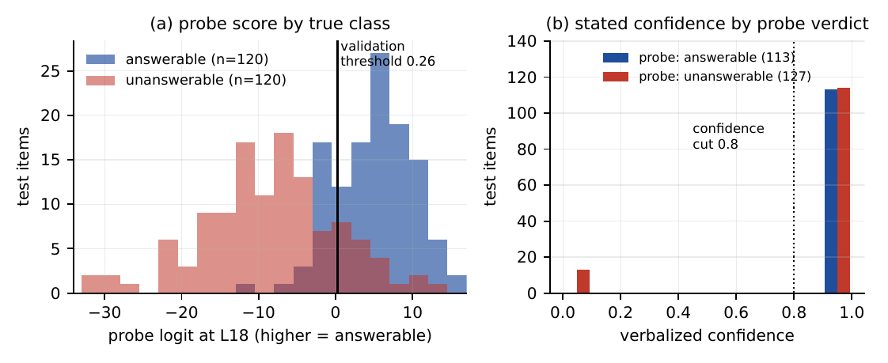

In plain language
The model can tell, but it does not say
If a model answers every question in the same confident tone, a reader cannot tell which answers to trust, and the problem is sharpest when the passage a question refers to does not contain the answer. We asked a narrow version of this: when Phi-3.5-mini-instruct reads a passage and a question the passage cannot answer, does its internal state carry a trace of that fact, and does anything the model says or does reflect the trace?
A simple linear probe on the model’s hidden state at the last prompt token separates answerable from unanswerable SQuAD 2.0 questions at middle layers (AUROC 0.906 at layer 18). The model’s own signals do much worse: verbalized confidence reaches 0.621, and an explicit “reply UNANSWERABLE” option raises abstention on unanswerable items from 5% to only 15%, though every one of those 18 abstentions is correct.
On 46.7% of all test items the probe says unanswerable while the model commits with confidence of at least 0.8, and those items are wrong 82.1% of the time, against 52.5% overall. We also found that the SelfAware benchmark is source-confounded, so we report it as a warning and not as evidence. The claim stays within SQuAD: one model, one run and one prompt, with no causal test.
Key results
What we measured
Phi-3.5-mini-instruct (3.8B parameters, 8-bit) on SQuAD 2.0 and SelfAware, 3,200 items in total. SQuAD results use the test split (n=240; 120 answerable, 120 unanswerable). Intervals are 95% bootstrap intervals over test items.
- Probe AUROC, layer 18
- 0.90695% CI 0.867 to 0.948, chosen on validation data. A probe trained on shuffled labels scores 0.492.
- Verbalized confidence
- 0.621AUROC for answerability. Token-level and sampling signals reach 0.665 to 0.688; question length 0.569.
- Abstain option
- 5% to 15%Share of unanswerable test items the model abstains on with an explicit option, up from 5% without. Precision is 1.0 (18 of 18).
- The gap
- 46.7%Share of all test items where the probe says unanswerable yet the model answers at confidence of at least 0.8. Those answers are wrong 82.1% of the time.
Answerability AUROC by signal
SQuAD 2.0 test split, n=240. Higher separates answerable from unanswerable better.
Flagging unanswerable items
SQuAD test split. Thresholds for the probe and verbal confidence were fitted on validation labels; the abstain option used none.
The SelfAware score is a confound, not a finding. On SelfAware the probe reaches AUROC 0.993, but a classifier that sees only each item’s source label reaches 1.000, because every unanswerable item comes from SelfAware and no answerable one does. Transfer between the two datasets is weak (0.58 and 0.67). The paper makes no causal claim, uses one seed and one split, and does not show that the model withholds anything.
What we asked
Three contributions
1
A layer-wise probe study on SQuAD 2.0 with a validation-chosen layer, well above verbal confidence, token signals, a length baseline and a shuffled-label null.
2
An audit of source confounds. SelfAware and pooled probe scores (0.993, 0.959) are not evidence of answerability coding, since source alone gives 1.000 on SelfAware.
3
Behavioral gap measures with explicit definitions, including a recognition–action gap of 0.296, with a statement of why each is partly a consequence of prompt design.
Figures
From the paper


Explore everything
Every artifact, one click away
The paper, the slides, the code and the dataset behind every number. SQuAD 2.0 and SelfAware are public (CC BY-SA 4.0).
Video
Watch the walkthrough
Cite
BibTeX
@misc{obrien2026answerability,
title = {A Linear Answerability Signal That the Model Does Not Act On: Probes, Verbal Confidence and an Abstain Option in Phi-3.5-mini},
author = {O'Brien, Mackenzie},
year = {2026},
note = {AI x Epistemics Research Sprint, Track 1},
howpublished = {\url{https://github.com/mso-docs/Apart-Epistemics}}
}